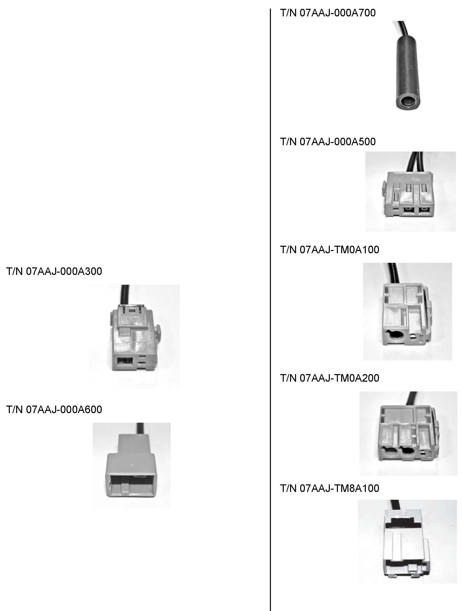
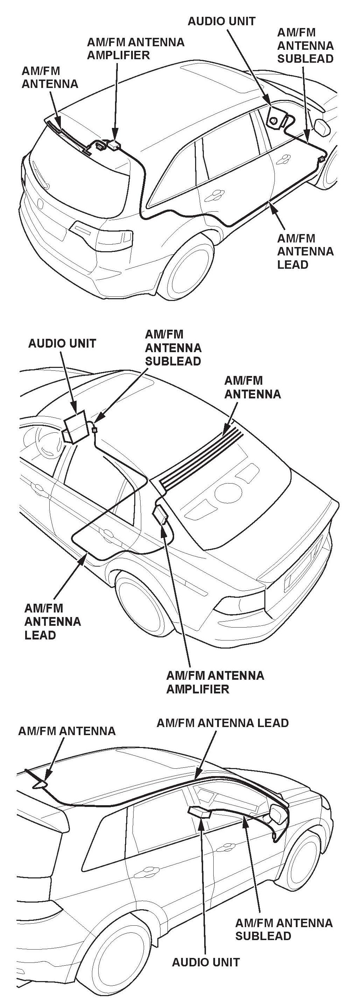

Audio System - Revised Poor AM/FM Reception Diagnostics
08-054May 17, 2012
Applies To:
2004-13 Models - ALL
Service Manual Update: Poor AM or FM Reception
(Supersedes 08-054, dated April 16, 2010, to revise the information marked by the asterisks)
*REVISION SUMMARY
In Applies To, 2013 models were added.*
SYMPTOM
The AM or FM radio reception is poor or filled with
static.
CORRECTIVE ACTION
Test the antenna circuit using the test antenna, and
repair or replace any damaged AM/FM antenna leads
or components.
TOOL INFORMATION
Test Antenna - T/N 07AAJ-000A200

NOTE:
Adapter T/N 07AAJ-000A700 has a small barrel adapter on one end with a standard barrel adapter on the other end. All other adapters have a standard barrel adapter on the end that is not shown.
WARRANTY CLAIM INFORMATION
None. This bulletin is for information only.
REPAIR PROCEDURE
NOTE:
^ Vehicles may have the following parts that you need to check. Refer to the applicable service manual for more information on these parts.
- AM/FM antenna sublead
- AM/FM antenna lead
- AM/FM antenna amplifier (may be built into the
AM/FM antenna)
- AM/FM antenna
^ There are several different antenna styles and locations. Refer to the applicable service manual for specific parts information and locations.
^ Aftermarket metallic window tinting can affect AM/FM window antennas. If the vehicle is equipped with a window antenna, check all the other parts first. If the reception is still poor and the vehicle has aftermarket tinting, remove the tinting, then retest. If the reception is still poor, replace the AM/FM antenna.
^ To prevent rattles, slapping, or other noises, make sure to attach the sublead and the lead to the vehicle harness or the vehicle using clips, wire ties, or electrical tape.

^ Refer to the illustrations for the names and general locations of the AM/FM antenna and its parts. These images are examples only. Refer to the applicable service manual for model-specific information.
1. Do the Seek Stop Test:
^ Refer to the Audio section of the applicable service manual, or
^ Online, enter keyword SEEK, then select Seek Stop Test from the list.
^ If the number of AM and FM stations is within 10 percent of those on a known-good vehicle, no repair is needed at this time.
^ If the vehicle receives at least 10 percent fewer stations than a known-good vehicle, go to step 2.
2. Make sure you have the anti-theft codes for the audio system and the navigation system (if equipped).
NOTE:
Eject all the discs before removing the audio unit to prevent damaging the CD players load mechanism.
3. Disconnect the AM/FM antenna lead from the AM/FM antenna amplifier lead.
NOTE:
Refer to the applicable service manual, because you may need to remove trim, the headliner, or other parts.
4. Measure the voltage between the AM/FM antenna amplifier connector and body ground.
NOTE:
Refer to the applicable service manual to identify the terminal that provides battery voltage to the antenna amplifier.
^ If there is battery voltage, go to step 5.
^ If there is no battery voltage, go to TROUBLESHOOTING FOR POWER TO THE ANTENNA AMPLIFIER.
5. Connect the test antenna to the AM/FM antenna lead using the appropriate adapter.
6. Do the Seek Stop Test:
^ If the number of AM and FM stations the vehicle receives is within 10 percent of those on a known-good vehicle, go to step 13.
^ If the vehicle receives at least 10 percent fewer stations than a known-good vehicle, go to step 7.
7. Disconnect the AM/FM antenna sublead from the AM/FM antenna lead.
8. Connect the test antenna to the AM/FM antenna sublead (the harness connected to the audio unit) using the appropriate adapter.
9. Do the Seek Stop Test:
^ If the number of AM and FM stations the vehicle receives is within 10 percent of those on a known-good vehicle, replace the AM/FM antenna lead, then retest. Refer to the applicable service manual for the routing location of the AM/FM antenna lead.
^ If the vehicle receives at least 10 percent fewer stations than a known-good vehicle, go to step 10.
10. Disconnect the antenna cable connector from the audio unit.
11. Connect the test antenna to the audio unit using the appropriate adapter.
12. Repeat the Seek Stop Test:
^ If the number of AM and FM stations the vehicle receives increases and is within 10 percent of those on a known-good vehicle, replace the AM/FM antenna sublead, then retest. Refer to the applicable service manual for the routing location of the AM/FM antenna sublead.
^ If the number of AM and FM stations doesn't improve, or is not within 10 percent of those on a known-good vehicle, replace the audio unit, then retest. Refer to the service manual for the audio unit removal/installation procedures.
13. Substitute a known-good AM/FM antenna amplifier.
NOTE:
^ Do not use the test antenna for this step.
^ Some vehicles do not have an AM/FM antenna amplifier, or have one that is built into the AM/FM antenna. In these cases, substitute a known-good AM/FM antenna.
^ Refer to the applicable service manual, because you may need to remove the headliner, the carpet, or other parts to access the AM/FM antenna amplifier.
14. Repeat the Seek Stop Test:
^ If the number of AM and FM stations the vehicle receives is within 10 percent of those on a known-good vehicle, and has a separate antenna amplifier, replace the original AM/FM antenna amplifier.
^ If the number of AM and FM stations the vehicle receives is within 10 percent of those on a known-good vehicle, and it doesn't have an antenna amplifier, or has one built into the AM/FM antenna, replace the original AM/FM antenna.
^ If the vehicle receives at least 10 percent fewer stations than a known-good vehicle, and it has an AM/FM antenna with a separate antenna amplifier, repair or replace the AM/FM antenna.
15. Repeat the Seek Stop Test to confirm the repair.
16. Reinstall all remaining parts.
TROUBLESHOOTING FOR POWER TO THE
ANTENNA AMPLIFIER
1. Disconnect the AM/FM antenna sublead from the AM/FM antenna lead.
2. Measure the voltage between the AM/FM antenna sublead connector and body ground.
^ If there is battery voltage, replace the AM/FM antenna lead, then retest. Refer to the applicable service manual for the routing location of the AM/FM antenna lead.
^ If there is no battery voltage, go to step 3.
3. Disconnect the antenna cable connector from the audio unit.
4. Measure the voltage between the audio unit and body ground.
^ If there is battery voltage, replace the AM/FM antenna sublead. Refer to the applicable service manual for the routing location of the AM/FM antenna sublead.
^ If there is no battery voltage, replace the audio unit. Refer to the applicable service manual for the routing location of the AM/FM antenna lead. Refer to the service manual for the audio unit removal/installation procedures.

Disclaimer